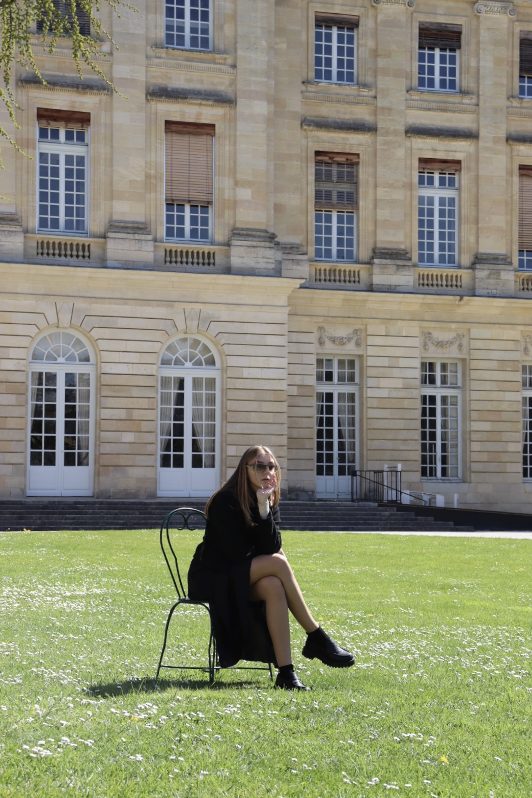
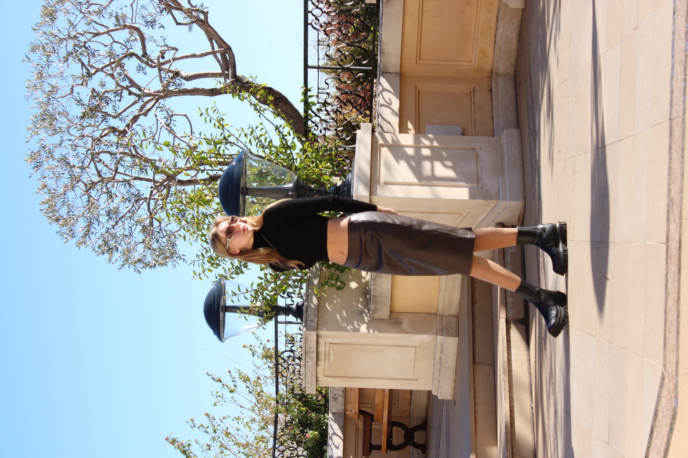
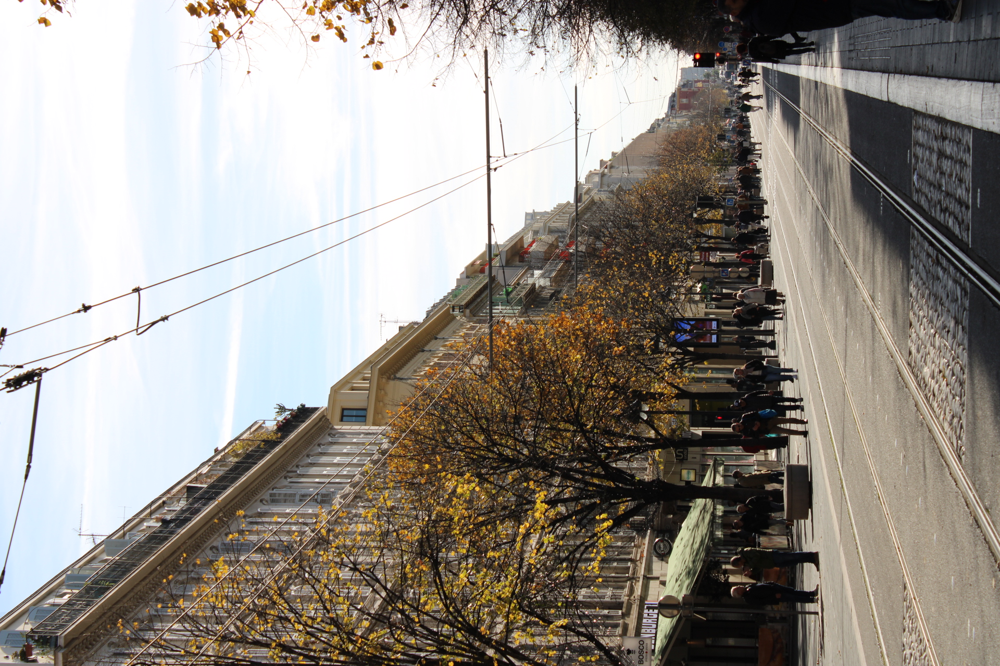
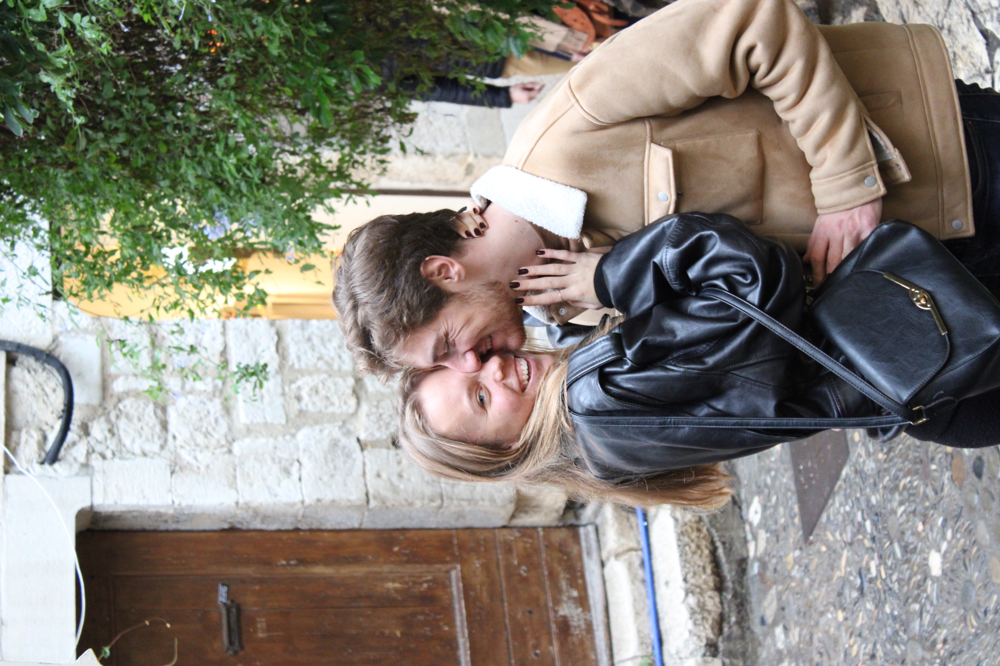
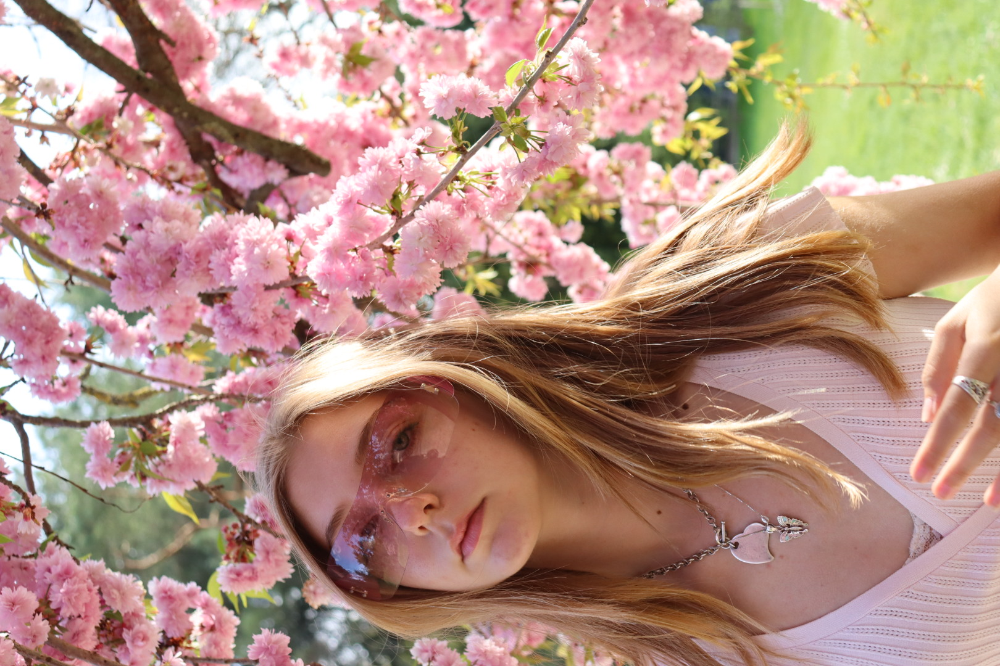
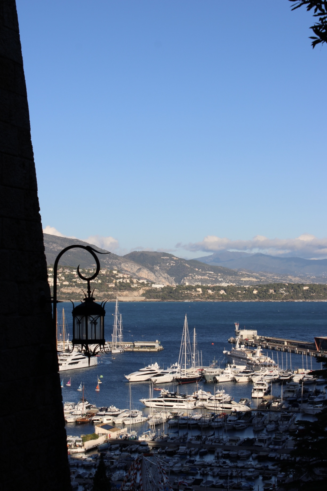
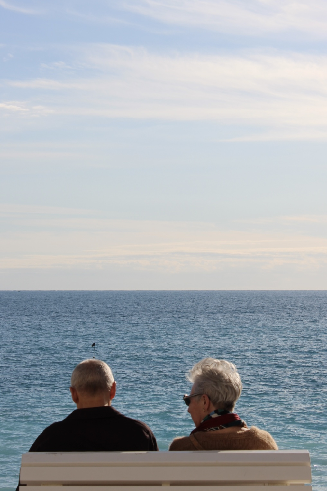
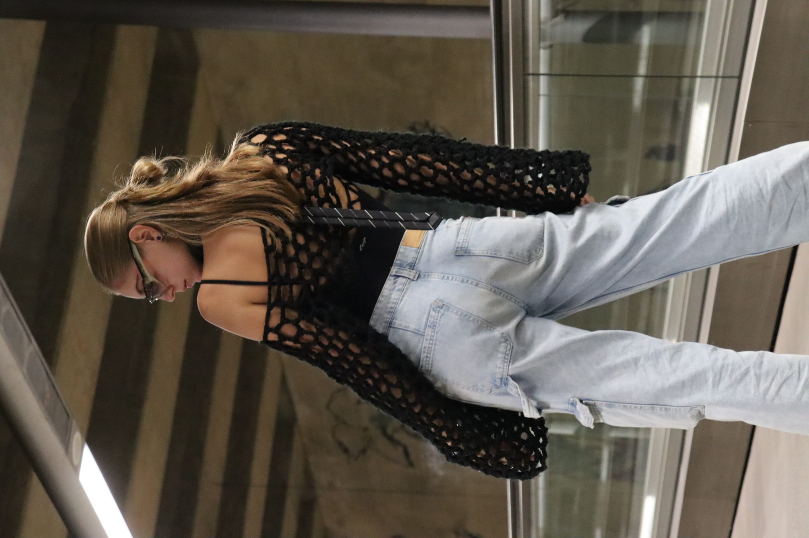
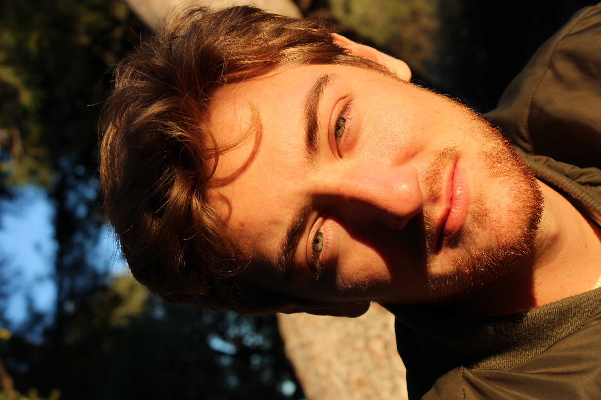
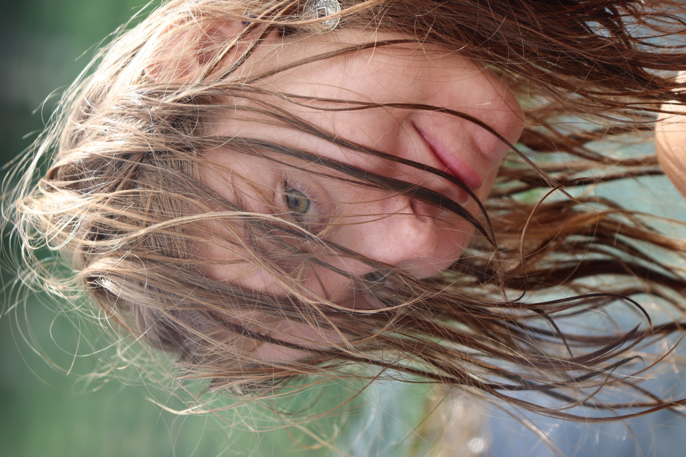

About me
Meu nome é Isadora Paiva, sou estudante de Desing na Faculdade de arquitetura da Universidade de Lisboa.
Sou de naturalidade brasileira e me mudei para portugal à 3 anos, e foi aí que iniciei a ter maior contato com varias áreas das artes, isso porque decidi seguir o secundário na ambito das artes visuais.
Assim, desde de então tomei intersse pela fotografia, pintura, crochet, edição de vídeo e muitas outras coisas.
Fotografia
Tenho grande interesse por fotografia, amo congelar momentos no tempo e poder revisita-los. Particularmente amo tirar fotos de paisagens e pessoas, assim como também tenho interesse de ser o objeto das fotos.











